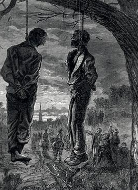

|
Amnesty refers to a formal procedure by which a group of people is forgiven for
past misdeeds, while a pardon is official forgiveness for a single individual.
During the Civil War and Reconstruction period, Presidents Abraham Lincoln and
Andrew Johnson, along with the United States Congress, issued several
proclamations of amnesty and pardon. These proclamations must be placed in the
context of an unfolding policy of reconstruction during and after the war. Two
questions dominated: What would be the best way to bring the rebellious states
and people back into the Union? And who should control the process: the
President or Congress?
Even as war was being waged on the battlefields, large portions of the South
had come under Union military control. President Lincoln desired that loyal
southerners regain control of their states as soon as possible. He also sought

Andrew Johnson
|
to demonstrate to the South that returning to the United States could be
relatively easy, in hopes of convincing the Confederacy to abandon its
rebellion. On December 8, 1863, Lincoln issued the first "Proclamation of
Amnesty and Reconstruction," in which he used his constitutional war powers to
seize control of the reconciliation process for the executive branch. Known in
history as Lincoln's 10% Plan, it offered a full pardon to all "insurgents," or
people who had engaged in the rebellion against the United States.
Of course there were conditions and exemptions. Several classes of
Southerners, including high Confederate officials and military officers, were
not to be granted amnesty under Lincoln's act. Eligible applicants, a category
that included the majority of Southerners, had to take an oath pledging their
loyalty to the U.S. Constitution, including all acts and laws passed regarding
the ex-slaves. As soon as 10% of the voters of 1860 had taken the oath, their
rights and privileges as citizens were restored fully. They could then re-form
their state government and hold elections for national offices. If these steps
were followed, the United States government would accept the southern state back
into the Union, as well as its national representatives back into the House of
Representatives and the Senate.
Lincoln's proclamation, which was put into action in Louisiana, ignited a
firestorm of protest by a group of men who would shortly be called the "Radical
Republicans." Led by Senators Charles Sumner of Massachusetts and Benjamin Wade
of Ohio, they put forward a different and far harsher plan for Reconstruction
that emphasized punishment for southern white "traitors." Many wanted to reward
the newly freed and loyal African Americans with the vote, making them the focus
of a reconstructed South. Most importantly, they wanted Congress and not the
President to control reconstruction. The issue was put on the back burner for
most of 1864 and into 1865 as the presidential elections, the end of the war,
and Lincoln's assassination commanded the attention of the country.
With Lincoln's death, Andrew Johnson was left in control of Reconstruction.
Acting on the authority given in Article II, Section 2 of the Constitution which
states that the president "shall have power to grant reprieves and pardons for
offenses against the United States," Johnson issued the next Proclamation of
Amnesty on May 29, 1865. Like Lincoln's proclamation, Johnson's offered amnesty
to all insurgents who took the oath. Since the war was over, Johnson dispensed
with the 10% plan and instead appointed provisional governors who would preside
over the reestablishment of loyal governments. Johnson's plan expanded the list
of people who were exempted from amnesty, including those whose taxable income
was worth more than $20,000. These individuals could apply to the
president for a personal pardon. Despite the many bureaucratic obstacles to
obtaining the pardons, Johnson granted thousands of them over the summer of
1865. Johnson would go on to issue two more Proclamations of Amnesty on July 4,
1868 and on December 25, 1868 that clarified the details and enlarged the scope
of the earlier proclamations.
Johnson's proclamations formed the basis of a generous reconstruction for the
|

This cartoon by Thomas Nast asserts that
amnesty for the South will lead to violence against African
Americans.
|
South. So generous, in fact, that Congressional Republicans to revive the
struggle over control of the timing and nature of reconciliation. From 1866 to
1868, Congress and the President presented competing versions of reconstruction
to the nation airing a period of rising southern white violence against African
Americans. Northern voters in the 1866 fall elections rejected decisively
Johnson's lenient reconstruction policy. Congressional Republicans, powerful and
united by their desire to remake the South more like northern society, put the
entire defeated region under control of the military with a series of
Reconstruction Acts. Many citizens in the South were thrown into confusion, as
Johnson's proclamations of amnesty were rendered null and void. Instead,
Congress declared that the more rigorous and exclusionary 14th amendment was the
guideline for citizenship.
As the popular support for a harsh reconstruction declined so too did
congressional resistance to leniency toward former rebels. In 1872 Congress
passed another Amnesty Act that removed office-holding disabilities for everyone
except a few of the highest-ranking officials and officers of the former
Confederacy. In 1898, Congress issued a universal amnesty for all those who had
not been granted it in earlier acts. In the long and bumpy road toward sectional
peace, the North in the end had decided on a sectional reconciliation that
emphasized harmony and forgiveness over the rights of freedmen.
Source: Joan Waugh, ed., Facts on File Encyclopedia of American
History: Civil War and Reconstruction, 1856 to 1869 (New York: Facts on
File, 2003), 8-9.
|